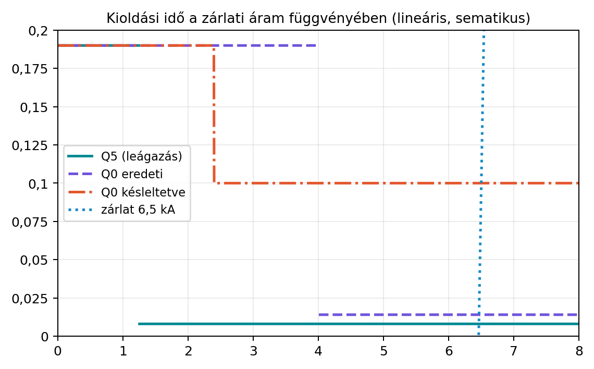

33.1 Ipari elosztóhálózatok
jellemzői és topológiája
A kapcsolódó elmélet: tankönyv, 33.1 alfejezet.
33.1.1 Kidolgozott példa – egy
fémmegmunkáló műhely terhelési jegyzéke (futó esettanulmány)
A terhelési jegyzék fogyasztónként tartalmazza a
felvett hatásos
()
és meddő teljesítményt
().
Ezt a műhelyt (a könyv Kisüzem mintaobjektumát) a 33.3
(tankönyv, 33.3) (méretezés), a 33.4 (tankönyv, 33.4) (csatlakozás), a
34.2 (tankönyv, 34.2) (szekrény) és a 34.4 (tankönyv, 34.4)
(dokumentáció) alfejezetben is végigvisszük. Az adatok tanulási
példák.
A Kisüzem terhelési jegyzéke (3 × 400 V)
Jel
Fogyasztó
kW
kW
kvar
A
Csop.
M1
kompresszor
15
0,910
0,85
16,48
10,22
28,0
motor
M2
eszterga
7,5
0,890
0,84
8,43
5,44
14,5
motor
M3
eszterga
7,5
0,890
0,84
8,43
5,44
14,5
motor
M4
marógép
5,5
0,896
0,83
6,14
4,13
10,7
motor
M5
szalagfűrész
2,2
0,867
0,81
2,54
1,84
4,5
motor
M6
elszívó
4
0,886
0,82
4,51
3,15
7,95
motor
W1
hegesztő-aljzat, 10 kVA
–
–
0,70
7,00
7,14
14,4
heg.
W2
hegesztő-aljzat, 10 kVA
–
–
0,70
7,00
7,14
14,4
heg.
E
világítás (LED)
–
–
0,95
3,20
1,05
4,9
vil.
X
aljzatkörök
–
–
0,90
6,00
2,91
9,6
alj.
DB-I
iroda
–
–
0,95
8,00
2,63
12,2
iroda
Csoportösszegek és csoport-egyidejűség
(példaértékek; ellenőrizendő: üzemi adat):
Csoport
kW
kvar
kW
kvar
motor
46,53
30,22
0,7
32,57
21,15
hegesztő
14,00
14,28
0,5
7,00
7,14
világítás
3,20
1,05
1,0
3,20
1,05
aljzat
6,00
2,91
0,3
1,80
0,87
iroda
8,00
2,63
0,6
4,80
1,58
összesen
77,73
51,09
–
49,37
31,80
Főelosztó (csoportok közötti egyidejűség
):
A beépített felvett teljesítmény 77,7 kW; egyidejűség nélkül
(
kVA) kb. 134 A adódna.
Szabály. Eltérő
esetén nem a látszólagos teljesítményeket adjuk össze,
hanem a
-t
és a
-t
külön, és ezekből számoljuk az
-t.
Ellenőrzés. (a) Ha a csoportok
-eit
adnánk össze,
kVA lenne: itt csak kb. 1 %-kal több, mert a
-k
közel vannak egymáshoz; erősen eltérő
-nél
(kompenzált és kompenzálatlan csoport) az eltérés nagy lehet, és a
helyes eredő
-t
is csak a
–
összegzés adja. (b) Nagyságrend: kb. 45 kW-hoz kb. 80 A tartozik. A
főelosztó védelmének tehát
A kell; a szelektivitás miatt 100 A-es főbiztosítót választunk (indoklás
a 33.3 (tankönyv, 33.3) alfejezetben).
Továbbvitt eredmény. Az MDB-ben
A. A motoros DB-M alelosztóban
kVA,
,
A. Ezeket a Méretezés: terhelés, feszültségesés és zárlat egyszerű
esetekben (tankönyv, 33.3) alfejezet használja.
33.1.2 Az alfejezet esete
megoldva
Térjünk vissza a motivációhoz: a kompresszorház zárlata az egész
csarnokot leállította. Adatok (tanulási példa, ellenőrizendő: gyártói
adatlap és szelektivitási táblázat):
Q0 főmegszakító (kompakt):
A, pillanatkioldó
A, késleltetés nincs;
Q5, a kompresszorház leágazása:
A,
A;
zárlat a kompresszorház alelosztójának sínjén, számított
kA.
1. Ki old?
kA > 4000 A és > 1250 A: mindkét készülék pillanatkioldó
tartományában van, ezért mindkettő azonnal old,
áramszelektivitás nincs.
2. Mit nézz meg? Az egyvonalas rajzot, a védelmi
beállítási táblázatot (a tényleges beállítások a készülékeken) és a
gyártó szelektivitási táblázatát.
3. Javítási lehetőségek (a tervező dönt, a
beállítást jogosult személy végzi):
(a) Időszelektivitás: a Q0 rövid késleltetésű (S)
kioldója, például
A,
s, a pillanatkioldó pedig 6,5 kA fölé állítva vagy kikapcsolva, ha a
készülék engedi. Feltétel: a Q0 és a sín rövid idejű zárlati
szilárdsága
()
legalább 6,5 kA 0,1 s-ig.
(b) Energiaszelektív készülékpár: a gyártó
táblázata szerint olyan Q0–Q5 páros, amely 6,5 kA-nél (vagy afölött)
szelektív, például nagyobb pillanatküszöbű vagy áramkorlátozó leágazási
megszakítóval.

Kioldási idő a zárlati áram függvényében
(lineáris, sematikus) - Vízszintesen az áram kA-ben, függőlegesen a
kioldási idő s-ban (a 0,19 s a hosszabb idejű tartomány jelképe). Q5
1,25 kA fölött kb. 0,008 s alatt old. Q0 eredetileg 4 kA fölött kb.
0,014 s alatt; módosítás után 2,4 kA fölött 0,1 s késleltetéssel. A
függőleges vonal a 6,5 kA-es zárlat.
4. Ellenőrzés a módosítás után: a Q5 leágazás utáni
6,5 kA-es zárlatnál a Q5 kb. 10 ms-on belül bont, a Q0 0,1 s-ig vár,
tehát csak a kompresszorház esik ki. A gyakorlatban ezt
a gyártói szelektivitási táblázat vagy a közös idő–áram görbék igazolják
(Szelektivitás, hátvédelem és megszakítóképesség (tankönyv, 18.4)). A Q0
késleltetésével a sínzárlat tovább tart: az ívenergia és a sín
melegedése nő, ezt a tervezésnél ellenőrizni kell.
33.1.3 Önellenőrzés
Mi a sugaras hálózat fő jellemzője és mi a legnagyobb
hátránya?
Igaz vagy hamis? A nyitott gyűrű üzemszerűen zárt állapotban üzemel.
Indokold!
Egy üzemben 10 db 5 kW-os fogyasztó van,
.
Mennyi a becsült csúcsteljesítmény?
Miért nagyobbak az ipari hálózat zárlati áramai, mint egy
lakóépületben?
Mit jelent az n–1 elv két transzformátoros betáplálásnál?
Miért tilos a tartalék betáplálást reteszelés nélkül párhuzamosan
üzemeltetni a hálózattal?
Miért oldhat ki egy alelosztó áram-védőkapcsolója, ha a szomszédos
alelosztóban N–PE híd van?
33.1.4 Gyakorló generátor:
terhelésbecslés
A terhelésbecslés lépései (felvett teljesítmény a hatásfokkal,
egyidejűségi tényező, P és Q külön összegzése, háromfázisú áram,
megszakítóválasztás) csak sok gyakorlással válnak rutinná. A
HTML-kiadásban az alábbi generátor tetszőleges számú feladatot ad négy
szinten: A – azonos motorok csúcsteljesítménye és betáplálási árama; B –
ugyanez a legkisebb megfelelő
kiválasztásával; C – vegyes fogyasztócsoportok (motor, ellenállásos
fűtés, LED-világítás, hegesztőgép, aljzatkör)
,
,
,
eredő
és
értéke; D – az n–1 elv szerinti leválasztás két transzformátornál. A
válasz ±1 % tűréssel fogadható el (tizedesvessző és pont is), a lap
felismeri a tipikus hibákat (a hatásfok elhagyása, egyfázisú képlet
háromfázisú hálózatra, a látszólagos teljesítmények összeadása vegyes
-nél,
lefelé kerekített
),
és lépésenként megmutatja a megoldást. A nyomtatott kiadásban az ábra
egy kidolgozott C szintű mintafeladatot mutat.
Statikus változat (mint a PDF-ben)
Terhelésbecslés – gyakorló generátor: kidolgozott C szintű
mintafeladat (vegyes fogyasztócsoportok)
Az alábbi rögzített feladatsor a generátorral készült; oldd meg előbb
önállóan, és csak utána nézd meg a megoldókulcsot. Az egyidejűségi
tényezők, hatásfokok és
-értékek
tanulási példaértékek (ellenőrizendő: a valós értéket az üzem adataiból
kell venni).
Rögzített feladatsor. A HTML-kiadás gyakorlója
végtelen sok hasonló feladatot ad; az alábbi sor rögzített, a
megoldókulcs a végén található.
(A) Egy műhelyben 4 db, egyenként 7,5 kW
tengelyteljesítményű motor van; η = 0,85, cos φ = 0,87, az egyidejűségi
tényező ki = 0,55, a hálózat 3 × 400 V. Mekkora a hálózatból
felvett egyidejű csúcsteljesítmény és a betáplálási áram?
(A) Egy műhelyben 4 db, egyenként 11 kW
tengelyteljesítményű motor van; η = 0,84, cos φ = 0,88, az egyidejűségi
tényező ki = 1,00, a hálózat 3 × 400 V. Mekkora a hálózatból
felvett egyidejű csúcsteljesítmény és a betáplálási áram?
(A) Egy műhelyben 4 db, egyenként 1,5 kW
tengelyteljesítményű motor van; η = 0,83, cos φ = 0,79, az egyidejűségi
tényező ki = 0,80, a hálózat 3 × 400 V. Mekkora a hálózatból
felvett egyidejű csúcsteljesítmény és a betáplálási áram?
(B) Egy műhelyben 4 db, egyenként 15 kW
tengelyteljesítményű motor van; η = 0,81, cos φ = 0,79, az egyidejűségi
tényező ki = 0,75, a hálózat 3 × 400 V. Mekkora a hálózatból
felvett egyidejű csúcsteljesítmény és a betáplálási áram? Válaszd ki a
sorból a legkisebb megfelelő névleges áramú megszakítót!
(B) Egy műhelyben 8 db, egyenként 2,2 kW
tengelyteljesítményű motor van; η = 0,90, cos φ = 0,82, az egyidejűségi
tényező ki = 0,50, a hálózat 3 × 400 V. Mekkora a hálózatból
felvett egyidejű csúcsteljesítmény és a betáplálási áram? Válaszd ki a
sorból a legkisebb megfelelő névleges áramú megszakítót!
(B) Egy műhelyben 3 db, egyenként 1,5 kW
tengelyteljesítményű motor van; η = 0,87, cos φ = 0,86, az egyidejűségi
tényező ki = 0,60, a hálózat 3 × 400 V. Mekkora a hálózatból
felvett egyidejű csúcsteljesítmény és a betáplálási áram? Válaszd ki a
sorból a legkisebb megfelelő névleges áramú megszakítót!
(C) Egy alelosztó fogyasztócsoportjai (3 × 400
V):
motorcsoport: 3 × 15 kW (tengely), η = 0,81, cos φ = 0,81,
ki = 0,90
aljzatkörök: 19 kW, cos φ = 0,90, ki = 0,60
hegesztőgépek: 39 kW, cos φ = 0,70, ki = 0,65
ellenállásos fűtés: 17 kW, cos φ = 1,00, ki = 0,65
LED-világítás: 22 kW, cos φ = 0,95, ki = 0,55
Számítsd ki az egyidejű P, Q, S értéket, az eredő cos φ-t és a
betáplálási áramot (Ib)!
(C) Egy alelosztó fogyasztócsoportjai (3 × 400
V):
motorcsoport: 3 × 4 kW (tengely), η = 0,90, cos φ = 0,86,
ki = 0,75
hegesztőgépek: 36 kW, cos φ = 0,70, ki = 0,80
LED-világítás: 32 kW, cos φ = 0,95, ki = 0,75
aljzatkörök: 3 kW, cos φ = 0,90, ki = 0,55
Számítsd ki az egyidejű P, Q, S értéket, az eredő cos φ-t és a
betáplálási áramot (Ib)!
(C) Egy alelosztó fogyasztócsoportjai (3 × 400
V):
motorcsoport: 6 × 7,5 kW (tengely), η = 0,89, cos φ = 0,82,
ki = 0,60
ellenállásos fűtés: 20 kW, cos φ = 1,00, ki = 1,00
aljzatkörök: 24 kW, cos φ = 0,90, ki = 1,00
LED-világítás: 12 kW, cos φ = 0,95, ki = 0,50
Számítsd ki az egyidejű P, Q, S értéket, az eredő cos φ-t és a
betáplálási áramot (Ib)!
(D) Egy üzemet két 800 kVA-es transzformátor
táplál. A csúcsterhelés 930 kVA, a nem fontos fogyasztók 60 kVA-t
tesznek ki. Az egyik transzformátor kiesik. Mennyi teljesítményt kell
leválasztani, és elég-e ehhez a nem fontos fogyasztók lekapcsolása?
Megoldókulcs.
A rögzített feladatsor megoldókulcsa
Feladat
Szint
Eredmény
1.
A
Pcsúcs = 19,4 kW; Iv = 32,2 A
2.
A
Pcsúcs = 52,4 kW; Iv = 85,9 A
3.
A
Pcsúcs = 5,78 kW; Iv = 10,6 A
4.
B
Pcsúcs = 55,6 kW; Iv = 102 A; In =
125 A
5.
B
Pcsúcs = 9,78 kW; Iv = 17,2 A; In =
20 A
6.
B
Pcsúcs = 3,1 kW; Iv = 5,21 A; In =
16 A
7.
C
P = 110 kW; Q = 71,6 kvar; S = 131 kVA; cos φ = 0,838; Ib
= 189 A
8.
C
P = 64,5 kW; Q = 44 kvar; S = 78 kVA; cos φ = 0,826; Ib =
113 A
9.
C
P = 80,3 kW; Q = 34,8 kvar; S = 87,5 kVA; cos φ = 0,918;
Ib = 126 A
10.
D
Slev = 130 kVA; elég a nem fontosak lekapcsolása? =
nem
Kidolgozott megoldások.
Az adattáblai Pn a tengelyen leadott teljesítmény; egy
motor felvett teljesítménye P1 = Pn/η = 7,5 kW /
0,85 = 8,82 kW.
Pcsúcs = ki · n · P1 = 0,55 · 4 · 8,82
kW = 19,4 kW.
Iv = Pcsúcs / (√3 · Uv · cos φ) =
19 410 W / (1,732 · 400 V · 0,87) = 32,2 A.
Az adattáblai Pn a tengelyen leadott teljesítmény; egy
motor felvett teljesítménye P1 = Pn/η = 11 kW /
0,84 = 13,1 kW.
Pcsúcs = ki · n · P1 = 1,00 · 4 · 13,1
kW = 52,4 kW.
Iv = Pcsúcs / (√3 · Uv · cos φ) =
52 380 W / (1,732 · 400 V · 0,88) = 85,9 A.
Az adattáblai Pn a tengelyen leadott teljesítmény; egy
motor felvett teljesítménye P1 = Pn/η = 1,5 kW /
0,83 = 1,81 kW.
Pcsúcs = ki · n · P1 = 0,80 · 4 · 1,81
kW = 5,78 kW.
Iv = Pcsúcs / (√3 · Uv · cos φ) = 5783
W / (1,732 · 400 V · 0,79) = 10,6 A.
Az adattáblai Pn a tengelyen leadott teljesítmény; egy
motor felvett teljesítménye P1 = Pn/η = 15 kW /
0,81 = 18,5 kW.
Pcsúcs = ki · n · P1 = 0,75 · 4 · 18,5
kW = 55,6 kW.
Iv = Pcsúcs / (√3 · Uv · cos φ) =
55 560 W / (1,732 · 400 V · 0,79) = 102 A.
Ib ≤ In: a sor legkisebb, 102 A-nél nem kisebb
eleme In = 125 A (a vezeték Iz-jét is ellenőrizni
kell).
Az adattáblai Pn a tengelyen leadott teljesítmény; egy
motor felvett teljesítménye P1 = Pn/η = 2,2 kW /
0,90 = 2,44 kW.
Pcsúcs = ki · n · P1 = 0,50 · 8 · 2,44
kW = 9,78 kW.
Iv = Pcsúcs / (√3 · Uv · cos φ) = 9778
W / (1,732 · 400 V · 0,82) = 17,2 A.
Ib ≤ In: a sor legkisebb, 17,2 A-nél nem kisebb
eleme In = 20 A (a vezeték Iz-jét is ellenőrizni
kell).
Az adattáblai Pn a tengelyen leadott teljesítmény; egy
motor felvett teljesítménye P1 = Pn/η = 1,5 kW /
0,87 = 1,72 kW.
Pcsúcs = ki · n · P1 = 0,60 · 3 · 1,72
kW = 3,1 kW.
Iv = Pcsúcs / (√3 · Uv · cos φ) = 3103
W / (1,732 · 400 V · 0,86) = 5,21 A.
Ib ≤ In: a sor legkisebb, 5,21 A-nél nem kisebb
eleme In = 16 A (a vezeték Iz-jét is ellenőrizni
kell).
motorcsoport: P1 = 3 · 15 kW / 0,81 = 55,6 kW;
ki · P = 50 kW; Q = P · tg φ = 36,2 kvar (cos φ =
0,81).
aljzatkörök: P = 19 kW; ki · P = 11,4 kW; Q = P · tg φ =
5,52 kvar (cos φ = 0,90).
hegesztőgépek: P = 39 kW; ki · P = 25,4 kW; Q = P · tg φ
= 25,9 kvar (cos φ = 0,70).
ellenállásos fűtés: P = 17 kW; ki · P = 11,1 kW; Q = P ·
tg φ = 0 kvar (cos φ = 1,00).
LED-világítás: P = 22 kW; ki · P = 12,1 kW; Q = P · tg φ
= 3,98 kvar (cos φ = 0,95).
P = Σ = 109,9 kW; Q = Σ = 71,56 kvar (P-t és Q-t külön
összegezzük).
S = √(P² + Q²) = 131,1 kVA; cos φ = P / S = 0,838.
Ib = S / (√3 · 400 V) = 189 A.
motorcsoport: P1 = 3 · 4 kW / 0,90 = 13,3 kW;
ki · P = 10 kW; Q = P · tg φ = 5,93 kvar (cos φ =
0,86).
hegesztőgépek: P = 36 kW; ki · P = 28,8 kW; Q = P · tg φ
= 29,4 kvar (cos φ = 0,70).
LED-világítás: P = 32 kW; ki · P = 24 kW; Q = P · tg φ =
7,89 kvar (cos φ = 0,95).
aljzatkörök: P = 3 kW; ki · P = 1,65 kW; Q = P · tg φ =
0,799 kvar (cos φ = 0,90).
P = Σ = 64,45 kW; Q = Σ = 44 kvar (P-t és Q-t külön összegezzük).
S = √(P² + Q²) = 78,04 kVA; cos φ = P / S = 0,826.
Ib = S / (√3 · 400 V) = 113 A.
motorcsoport: P1 = 6 · 7,5 kW / 0,89 = 50,6 kW;
ki · P = 30,3 kW; Q = P · tg φ = 21,2 kvar (cos φ =
0,82).
ellenállásos fűtés: P = 20 kW; ki · P = 20 kW; Q = P · tg
φ = 0 kvar (cos φ = 1,00).
aljzatkörök: P = 24 kW; ki · P = 24 kW; Q = P · tg φ =
11,6 kvar (cos φ = 0,90).
LED-világítás: P = 12 kW; ki · P = 6 kW; Q = P · tg φ =
1,97 kvar (cos φ = 0,95).
P = Σ = 80,34 kW; Q = Σ = 34,77 kvar (P-t és Q-t külön
összegezzük).
S = √(P² + Q²) = 87,54 kVA; cos φ = P / S = 0,918.
Ib = S / (√3 · 400 V) = 126 A.
Az egyik transzformátor kiesése után a megmaradó 800 kVA-es
transzformátor viszi a terhelést.
Slev = Scsúcs − STR = 930 − 800 = 130
kVA.
A nem fontos fogyasztók 60 kVA-je < 130 kVA, tehát nem elég: további
70 kVA-t is le kell választani.
33.1.5 Feladatok
1. feladat (A)
Sorold fel a három alapvető ipari elosztóhálózati topológiát, és egy-egy
mondatban jellemezd őket!
2. feladat (A)
Egy műhelyben 6 db 5,5 kW-os (tengelyteljesítményű) motor van. Az
egyidejűségi tényező
,
a motorok hatásfoka
,
.
Számítsd ki a hálózatból felvett becsült csúcsteljesítményt és a
látszólagos teljesítményt!
3. feladat (B)
Az előző feladat műhelyét 400 V-os, háromfázisú hálózat táplálja.
Határozd meg a betáplálási vonali áramot, majd ellenőrizd, hogy egy 32
A-es főmegszakító elegendő-e! Ha nem, mekkora névleges áramú
kismegszakítót javasolnál?
4. feladat (B)
Rajzold le szövegesen egy sugaras és egy nyitott gyűrűs hálózat
egyvonalas vázlatát! Jelöld be a betáplálást, a főmegszakítót és két
alelosztót! Magyarázd el, mi történik egy alelosztó betápláló kábelének
hibája esetén mindkét topológiában!
5. feladat (C)
Egy üzemet két 800 kVA-es transzformátor táplál. A csúcsterhelés 950
kVA, a nem fontos fogyasztók 200 kVA-t tesznek ki. Az egyik
transzformátor kiesik. Határozd meg, mennyi teljesítményt kell
leválasztani, és elegendő-e a nem fontos fogyasztók lekapcsolása!
7. feladat (C)
Egy üzem főelosztóját a „Két transzformátoros főelosztó sínbontóval”
rajz szerint két 630 kVA-es transzformátor táplálja. A csúcsterhelés 780
kVA, ebből a B sínre kötött nem fontos fogyasztók 200 kVA-t tesznek ki.
A T2 kiesik. Milyen sorrendben kapcsolsz, és mekkora lesz a Q1
terhelése?
6. feladat (D)
Egy üzemben a főelosztó és az alelosztó megszakítója is leold egy
rövidzárlatnál, pedig a hiba az alelosztó egyik leágazásában volt.
Milyen hálózati vagy védelmi beállítási hibára gyanakszol? Milyen
mérésekkel, dokumentumokkal ellenőriznéd a feltételezésed? (A mérést
jogosult személy végezheti!)
8. feladat (B+)
A Kisüzem terhelési jegyzékéből hagyd el a W2 hegesztő-aljzatot és az
irodát (DB-I). Számítsd újra a főelosztó
,
,
és
értékét (a csoport-egyidejűségek és
változatlanok).
33.1.6 Megoldások
Önellenőrzés – válaszok
A sugaras hálózatban minden fogyasztó csak egy útvonalon kap
táplálást. Előnye az egyszerű felépítés és védhetőség, hátránya, hogy
egy szakasz hibája az utána lévő összes fogyasztót feszültségmentessé
teszi.
Hamis. A nyitott gyűrű üzemszerűen nyitva van, hogy
a hálózat sugarasan, egyszerűen védhető legyen; a gyűrűt csak
áttápláláskor zárják.
.
Az ipari hálózat transzformátorai nagyobb teljesítményűek és kisebb
belső impedanciájúak, a vezetékek rövidebbek, ezért a hibahelyre jutó
zárlati áram lényegesen nagyobb.
Az n–1 elv szerint egy elem (például az egyik transzformátor)
kiesésekor a rendszer még biztonságosan, a fontos fogyasztókat továbbra
is ellátva üzemeljen, szükség esetén a nem fontos terhelések
leválasztásával.
A reteszelés nélküli párhuzamos üzem visszatáplálást okozhat, ami a
hálózati dolgozókat veszélyezteti, és a védelmi koordinációt
felborítja.
A híd miatt a terhelés N-árama több párhuzamos úton, részben a PE-n
folyik vissza. Ha ez az út az áram-védőkapcsoló mérőtransformátorát
megkerüli vagy azon át vezet, a relé az L és N áramok különbségeként
differenciaáramot érzékel, és kiold.
1. feladat (A)
A három topológia: sugaras, gyűrűs (nyitott), hurkolt. A sugaras
egyetlen útvonalat ad, a gyűrűs egy ponton nyitott zárt hurkot alkot, a
hurkolt több összekapcsolt utat tartalmaz.
3. feladat (B) Adott:
,
. Keresett:
és a szükséges megszakító névleges árama. Képlet:
. Számítás:
. Ellenőrzés: a 32 A-es főmegszakító nem elegendő, mert
;
az 50 A-es sem
(
sérülne), tehát legalább 63 A-es kismegszakító szükséges, a vezeték
terhelhetőségétől függően
().
4. feladat (B) Szöveges rajz (rajzban lásd a Topológiák alszakasz
egyvonalas vázlatát):
- Sugaras: betáplálás → Q1 főmegszakító → gyűjtősín →
Q2 alelosztó A, Q3 alelosztó B. Mindkét alelosztó külön leágazáson,
egyetlen útvonalon.
- Nyitott gyűrűs: betáplálás → Q1 főmegszakító →
gyűjtősín → két leágazás: Q2 az A alelosztóhoz, Q3 a B alelosztóhoz. Az
A és B alelosztó között van egy nyitott Q4 gyűrűkapcsoló, tehát a gyűrű
üzemszerűen nyitott. Hiba esetén: A sugarasnál, ha az A alelosztó betápláló
kábele hibás, az A alelosztó fogyasztói lekapcsolódnak, a B tovább
üzemel. A nyitott gyűrűsnél, ha az A betápláló kábel hibás, a Q2 leold,
és az A szakasz kiesik. Ezután a hibás kábelszakaszt mindkét végén
leválasztjuk (a Q2 nyitva marad és reteszeljük, az A alelosztó
betáplálási leválasztóját nyitjuk), és csak ezt követően zárjuk a Q4
gyűrűkapcsolót: így a B betáplálás felől az A alelosztó fontos
fogyasztói áttáplálhatók. Ha a Q4-et a még csatlakozó hibás kábelre
zárnánk, a B ág a zárlatra kapcsolna, és a teljes csarnok kiesne. A
kapcsolási sorrendet az üzem kapcsolási utasítása rögzíti, és csak
jogosult személy végezheti.
5. feladat (C) Adott: két transzformátor, egyenként
;
csúcsterhelés
;
nem fontos fogyasztók
. Keresett: a leválasztandó teljesítmény. Képlet:
,
ha
. Számítás:
. Ellenőrzés: a nem fontos fogyasztók 200 kVA-je
leválasztható, és mivel
,
elegendő a nem fontos fogyasztók lekapcsolása. A megmaradó terhelés
,
ami a 800 kVA-es transzformátor kapacitása alatt van.
7. feladat (C) Adott:
,
,
. Sorrend: (1) a nem fontos leágazások (Q21, Q22)
nyitása; (2) a Q2 nyitott állapotának ellenőrzése és reteszelése (a
kiesett T2 felől se lehessen visszakapcsolni); (3) a Q3 sínbontó zárása
– a reteszelés ezt csak akkor engedi, ha a Q2 nyitva van, így nem lehet
mindhárom kapcsoló zárva. Ellenőrzés: a Q1 és a T1 terhelése
,
tehát a fontos fogyasztók ellátása megmarad. A sorrendet az üzemi
kapcsolási utasítás rögzíti, és csak jogosult személy kapcsolhat.
6. feladat (D)
A jelenség arra utal, hogy a főmegszakító és az alelosztó megszakítója
között nincs megfelelő szelektivitás. A feltételezés
ellenőrzése:
- Először a védelmi beállítási táblázatot és a gyártói dokumentációt
kell megnézni, hogy a két megszakító kioldási görbéje hogyan viszonyul
egymáshoz.
- Ezután a zárlati áram nagyságát kell meghatározni (például a mért
hurokimpedanciából,
).
Ha a zárlati áram mindkét megszakító pillanatkioldó tartományába esik,
akkor áramszelektivitás nem érvényesül.
- A hurokimpedancia-mérést üzemi feszültség alatt, az MSZ EN 61557-3
szerinti műszerrel, megfelelő CAT-kategóriájú mérőzsinórral és a
munkautasítás szerinti védőeszközökkel csak erre jogosult, képzett
személy végezheti (a szigetelésmérés ezzel szemben feszültségmentes
állapotban történik); a zárlati áramot a mért
-ből
számítjuk
().
(ellenőrizendő: aktuális szabványkiadás) Megoldás: időszelektivitás beállítása a főmegszakítón,
vagy nagyobb kioldási tartományú, illetve késleltetett megszakító
választása, a gyártói adatokkal összehangolva.
8. feladat (B+)
A hegesztőcsoport egyidejű értéke
kW,
kvar, az iroda kimarad.
kW,
kvar,
kVA,
A.
33.1.7 Terhelések, egyidejűségi
tényező – példák és gyakorlók
Kidolgozott példa – egyidejűségi tényező és betáplálási
áram. Adott: egy műhelyben 5 db, egyenként 7,5 kW
tengelyteljesítményű (adattáblai, leadott) motor üzemel,
,
,
,
. Keresett: a várható egyidejű csúcsteljesítmény és a
főelosztó betáplálási árama. Képlet: a motor adattáblai
a tengelyen leadott teljesítmény, a hálózatból felvett hatásos
teljesítmény
;
így
,
majd
és
. Behelyettesítés:
(tengelyteljesítmény)
(felvett)
Ellenőrzés: a visszaszámolt hatásos teljesítmény
,
ami egyezik a felvett csúcsteljesítménnyel (a hatásfok figyelmen kívül
hagyása az áramot 46,2 A-re, tehát mintegy 12 %-kal alábecsülné). A
főelosztóban legalább
szerint kell kismegszakítót választani, például 63 A-es készüléket
(),
a vezeték terhelhetőségétől függően. ∎
33.1.8 Üzemi megbízhatóság,
tartalék betáp – példák és gyakorlók
Kidolgozott példa – n–1 elvű tartalék. Adott: két transzformátor, egyenként 630 kVA; a
csúcsterhelés 780 kVA; a nem fontos fogyasztók (például
hűtőkompresszorok) összesített terhelése 120 kVA. Keresett: ha az egyik transzformátor kiesik, elegendő-e
a másik kapacitása? Képlet: a megmaradó transzformátor névleges
teljesítménye
,
a leválasztandó teljesítmény
,
ha
. Behelyettesítés:
,
.
. Ellenőrzés: a nem fontos fogyasztók összesen 120 kVA-t
tehetnek ki, ami önmagában nem elég, mert 150 kVA-t kell leválasztani.
Tehát további 30 kVA, például egy kevésbé fontos műhelyág lekapcsolására
is szükség van. Ez a tervezési szemlélet: a tartalék betáp nem
helyettesíti a teljes csúcsterhelést, hanem a folyamat szempontjából
fontos fogyasztókat tartja üzemben. ∎